- メイン >
- フィギュア
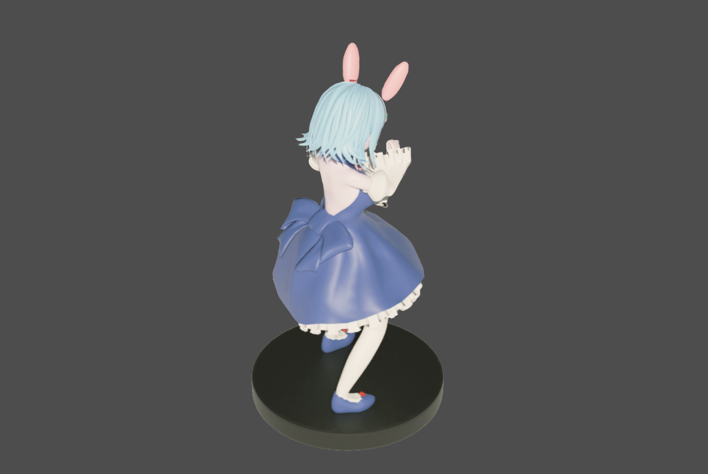
メイキング
※画像をタップで拡大
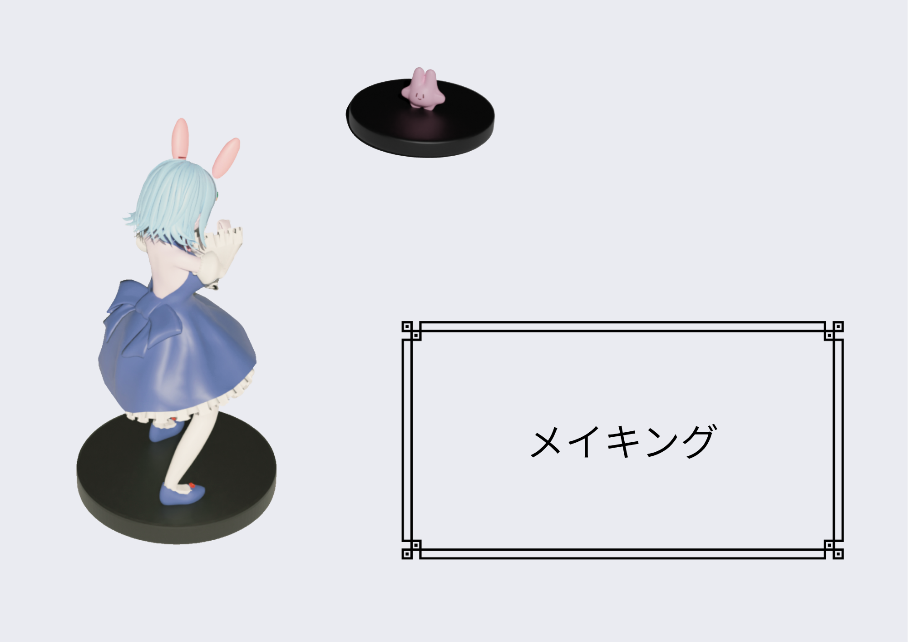
メイキング
この画像はibisPaint Xで元画像から背景を取り除いたものをSamsung Galleryで加工したものです。
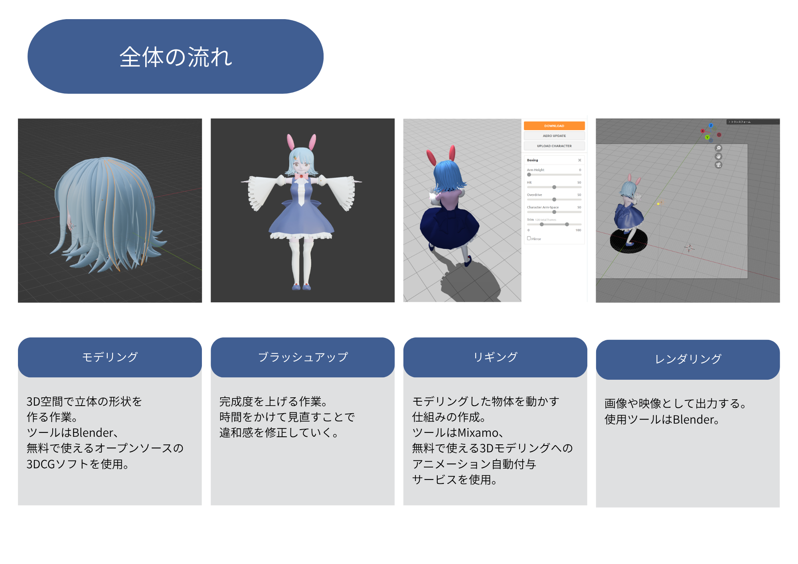
全体の流れ
主に4つに分類しています。3Dモデルを作り修正を重ねて、骨格を入れた後にポーズを取らせて画像にしています。
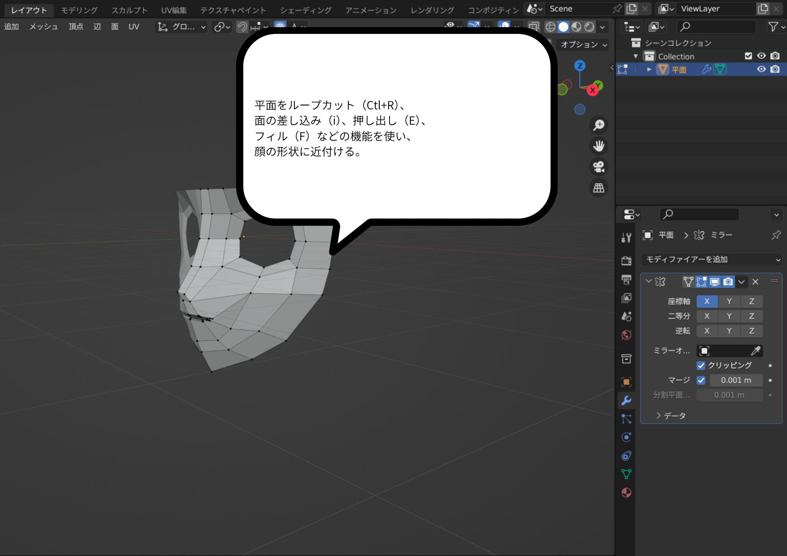
頭部のモデリング1
初めに頭部を作ります。
お面のような形を目指し、この時点ではかなり大まかに作ります。
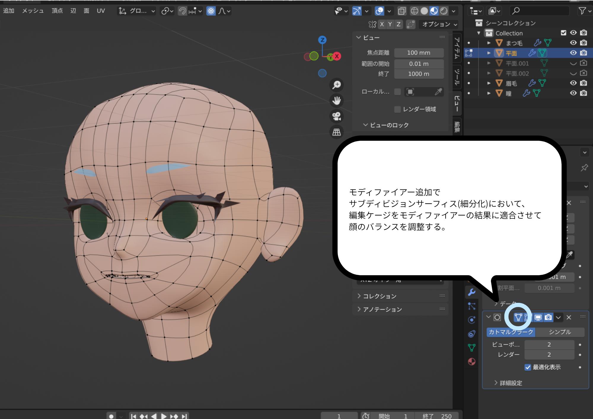
頭部のモデリング2
顔のベースが完成。
この後は色々な角度から確認しながら、修正を繰り返します。
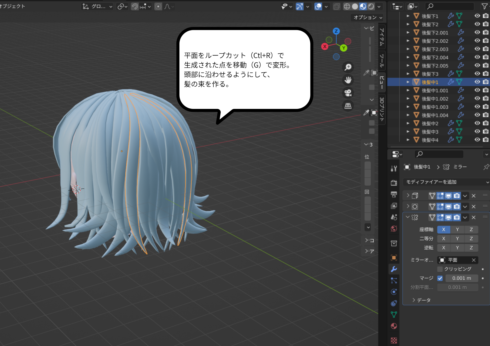
頭部のモデリング3
髪の束を一つずつ作ります。
頭皮が見えなくなるまで、慎重にバランス良く配置を行うことが重要です。
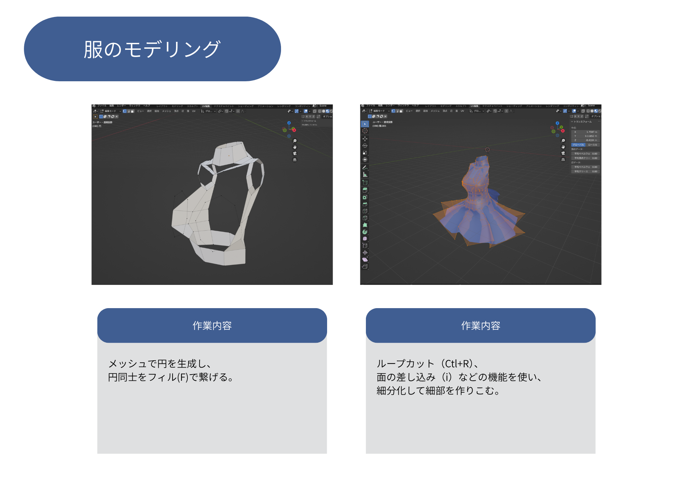
服のモデリング
服のモデリングのやり方と同様にメッシュの点同士をフィルで繋げて面を貼る方法で身体も作りました。
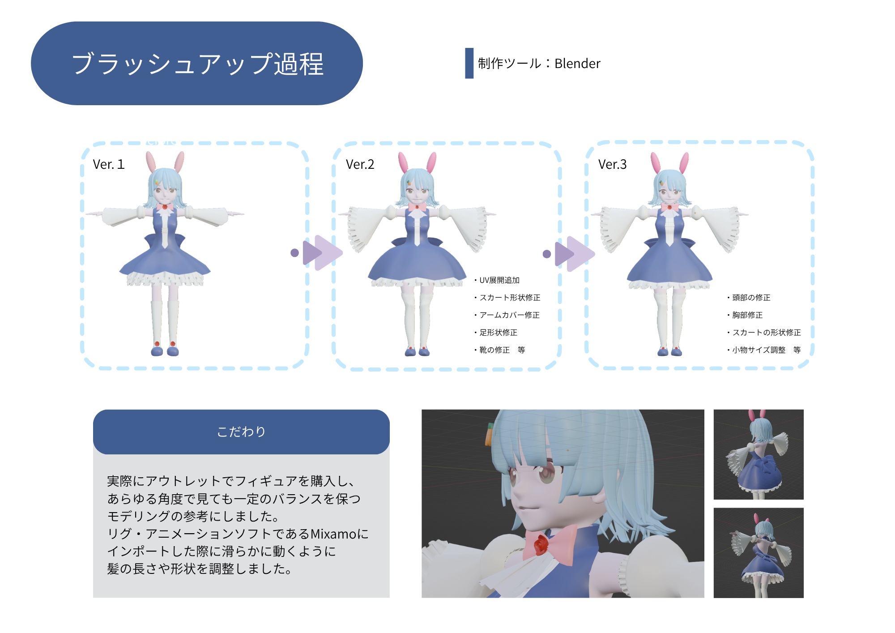
ブラッシュアップ過程1
モデルはversion3まであります。
version1自体は2026年2月下旬時点のもので、参考フィギュア購入はversion3制作中でした。
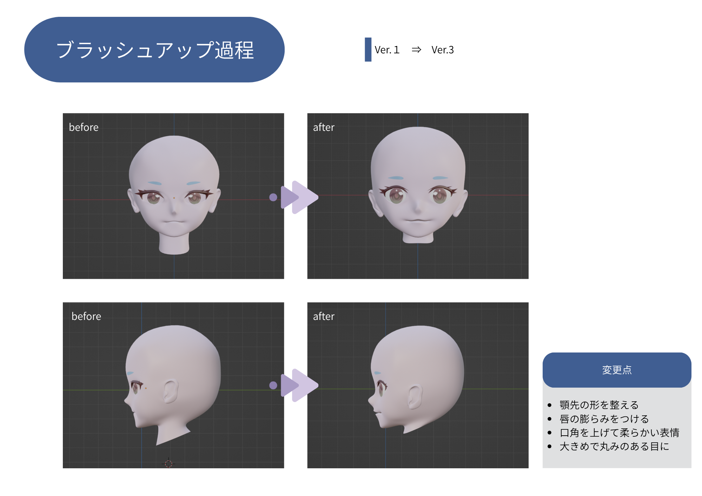
ブラッシュアップ過程2
MMDモデルやフィギュアなどは、横顔よりも斜め顔が重視されますがフィギュアを参考に全体的に整えました。
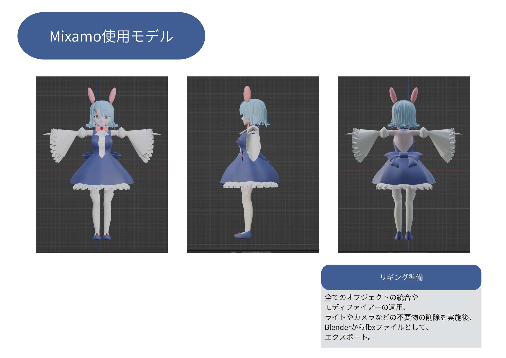
Mixamo使用モデル
Mixamo上ではUV展開が反映されないことを失念していたので、ここでマテリアルを変更しました。
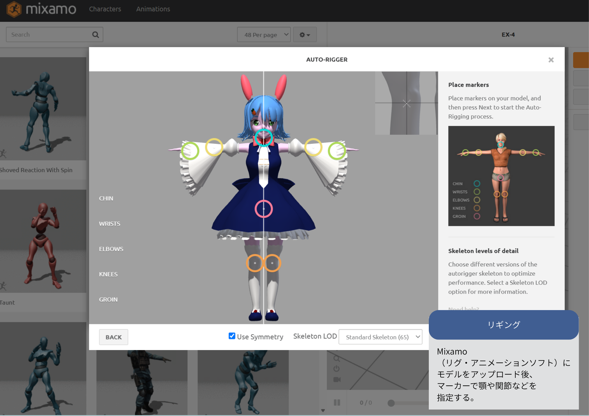
Mixamo1
マーカーを右の手本を見ながら移動させます。失敗すると動いた際に衣服から身体が飛び出したり、衣服が捻じれたりします。
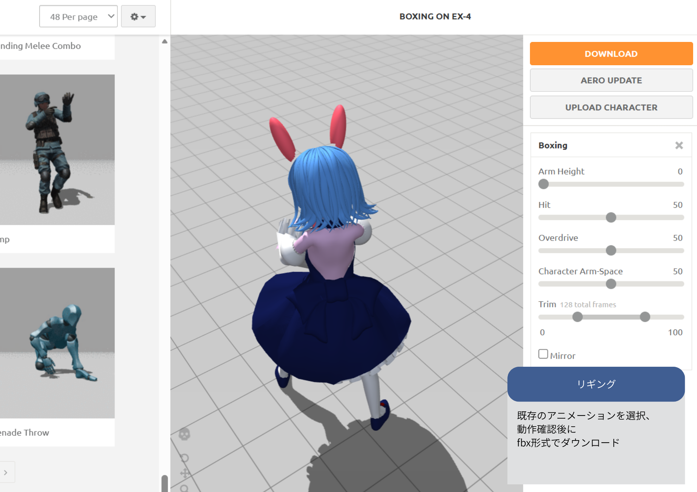
Mixamo2
Blender及びMixamo上では表情切り替えが不可能なので常に微笑み、どこか恐怖を感じる仕様と化したため今回は後ろ姿のフィギュアです。
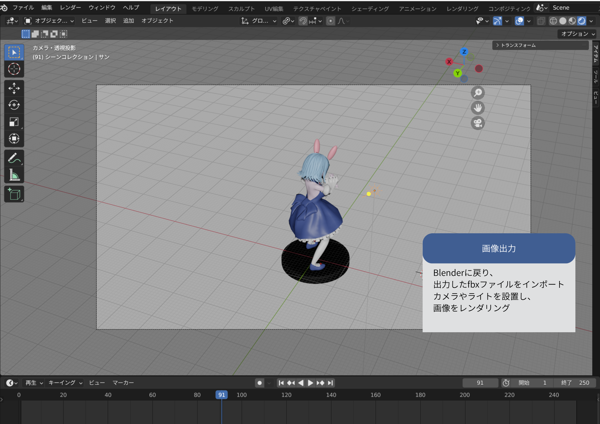
画像出力準備
レンダーエンジンをCyclesに指定してレンダリングを実行しました。
陰影や質感が綺麗に出せて満足しています。
おまけ
今回はMixamoで付与したアニメーションを停止させて、フィギュアのポージングを行いました。
本来はアニメーションをつけることができ、このように動かすことが可能です。
画質を高く設定するほどレンダリングに時間がかかります。今回の動画は数時間かかりました。
なお、あまりにも短かったため二回分を編集で繋げています。
使用ツール
作品制作
・Blender
・Mixamo
・Samsung Gallery
・ibisPaint X
動画編集
・Adobe Premiere Pro
メイキング制作
・Canva
Webサイト制作
・Visual Studio Code